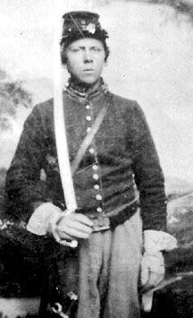

|

NAME: William Rave
BORN: 1843
DIED: 1909
ALLEGIANCE: Union
HIGHEST RANK: Private
UNIT: 8th Illinois Cavalry, Company D
RECORD: Mustered in at St. Charles, Illinois, on
September 18, 1861. Served in Virginia during Major General
George B. McClellan's Peninsula Campaign. Injured in a fall
from a horse on May 1, 1862. Received a medical discharge on
January 22, 1863.
|
|
Born on November 30, 1843, to German Immigrant parents,
William Rave spent his early years in downtown Detroit,
where his father had a shoe store. By 1854, however, the
family was ready for a change, and bought a farm outside
Bloomington, Illinois. Rave surely had no idea that the
horsemanship he learned on that farm would one day be used
in the service of his country.
Rave, who had brown hair and blue eyes, stood five feet,
eight inches tall when he enlisted in Company D of the 8th
Illinois Cavalry. He was also only 17 years old.
Nevertheless, he was mustered into service with his unit on
September 18, 1861, for "three years or the war." It would
be neither.
Less than a month after mustering in, Rave's unit was
outfitted. Private Rave and the 8th left on the Pittsburgh,
Fort Wayne and Chicago Railroad, arriving in Washington,
D.C., to the sights and sounds of war: soldiers drilling,
banners flying, drums beating. Marching along Pennsylvania
Avenue past the White House, the Illinoisans responded with
three hearty cheers to a wave from President Abraham
Lincoln.
Rave's regiment camped at Meridian Hill, within sight of
the White House and the unfinished capitol. On December 17,
the 8th was ordered to join the Army of the Potomac. The
unit marched across Long Bridge and into Virginia, camping a
few miles southwest of Alexandria. After a number of
reconnaissance missions near the Rappahannock River, the 8th
served in Major General George B. McClellan's Peninsula
Campaign. On May 1, 1862, at White House, Virginia, Rave was
carrying a message for Colonel Benjamin Franklin "Grimes"
Davis when the horse he was riding fell. The cavalryman was
thrown to the ground, and his horse landed on him, causing
severe internal injuries. Rave was never the same again.
After spending time in hospitals and convalescent camps, he
was granted a medical discharge on January 22, 1863.
Rave's older brother, August, suffered a similar fate. On
October 15, 1863, one year after he had joined Company D,
August took part in a night march as the Army of the Potomac
pursued Confederate General Robert E. Lee near Dumfries,
Virginia. August's horse stumbled, hurling August over its
head. A horse following him trampled him as he lay on the
ground. Unlike his younger brother, however, August managed
to recover his health sufficiently to rejoin his regiment
and serve out the war. He was with the 8th Illinois when the
unit was mustered out of the service in Chicago on July 17,
1865. August died on February 14, 1908; his brother,
William, died the following January 3. Both are buried in
Chicago.
Source: Civil War Times Illustrated
36:2 (May 1997), 72.
|